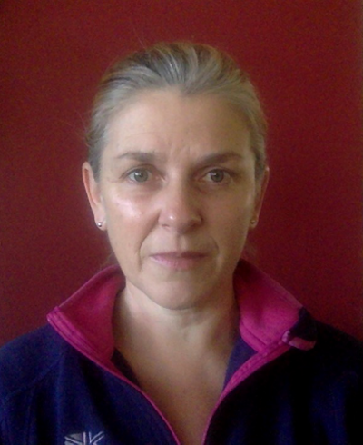

Submission: June 30, 2020- Submission: July 8, 2020
- Notification: Aug 4
- Camera ready: Aug 30
- Meeting: Nov 5-6
Keynote Speakers

Rachel Bellamy
IBM Research, NY:
"Fair AI in Practice"
Lionel Briand
U.Ottawa, Canada:
"Natural Language and Software Requirements"
Dr. Rachel Bellamy: Fair AI in Practice. Fairness is an increasingly important concern as machine learning models are used to support decision making in high-stakes applications such as mortgage lending, hiring, and prison sentencing. This talk will introduce an open source Python toolkit for algorithmic fairness, AI Fairness 360 (AIF360). The main objectives of this toolkit are to help facilitate the transition of fairness research algorithms to use in an industrial setting and to provide a common framework for fairness researchers to share and evaluate algorithms. Dr. Bellamy is a Principle Research Scientist and manages the Human-AI Collaboration group at IBM T J Watson Research Center, Yorktown Heights, New York Her team is currently working on the user experience for several of IBM's AI projects, including the AI Fairness 360 toolkit and rule-based machine-teaching for Watson Assistant. Rachel received her doctorate in cognitive psychology from University of Cambridge, UK in 1991. She holds many patents and has published more than 70 research papers. For more, see her website.
Dr. Lionel Briand: NLP and Requirements Abstract, to be confirmed. Lionel C. Briand is professor of software engineering and has shared appointments between (1) The University of Ottawa, Canada and (2) The SnT centre for Security, Reliability, and Trust, University of Luxembourg. One of the founders of the ICST conferencea ge was also EiC of Empirical Software Engineering (Springer) for 13 years. Lionel was elevated to the grade of IEEE Fellow in 2010 for his work on testing object-oriented systems. He received an ERC Advanced grant in 2016- on the topic of modelling and testing cyber-physical systems- which is the most prestigious individual research award in the European Union. Most recently, he was awarded a Canada Research Chair (Tier 1) on "Intelligent Software Dependability and Compliance". His research interests include: software testing and verification, model-driven software development, applications of AI in software engineering, and empirical software engineering. For more, see his website.
Special Issue (at EMSE)

Inventing the next generation of software analytics.
Following on from this conference, we are organizing a special issue of the Empirical Software Engineering Journal.
We will ask authors to comment on the success and failings of software analytics over the last 20 years and will ask "what and how can we do it better in future?". It is encouraged, but not mandatory that authors explore the ethical issues raised in our CFP.
The special issue will have the same guest editors as the co-PC chairs of this conferences. Where possible, that special issue will also try to use the same reviewers as PROMISE'20. The special issue will be open to the entire SE community.
Note that any PROMISE conference paper submitted to the special issue must be a significant extension to original conference content.
ORGANIZING COMMITTEE
general chair: Leandro Minku, UKco-pc-chairs: Tim Menzies, USA
and Mei Nagappan, Canada
proceedings: David Bowes, UK
publicity: Igor Steinmacher, USA
and Xin Xia, AUS
Covid-19 notice
Due to covid-19, PROMISE'20 will be a fully virtual event, co-located with FSE. Further information will follow soon.
For decades, PROMISE has lead the SE field in open science. Here, we place a high premium on work that can be repeated and/or improved and/or refuted by other researchers. Hence we focus on those conclusions that can be reached automatically, via data mining. Also, we strongly suggest that PROMISE authors share their tools and data.
This meeting will be followed by a special issue of the Empirical Software Engineering journal, focusing on the issues of this conference.
Accepted Papers
Hamoud Aljamaan and Amal Alazba
(King Fahd University of Petroleum and Minerals, Saudi Arabia; King Saud University, Saudi Arabia)
Wisam Haitham Abbood Al-Zubaidi, Patanamon Thongtanunam, Hoa Khanh Dam, Chakkrit Tantithamthavorn, and Aditya Ghose
(University of Wollongong, Australia; University of Melbourne, Australia; Monash University, Australia)
H. Alperen Cetin and Eray Tuzun
(Bilkent University, Turkey)
David Bowes, Giuseppe Destefanis, Tracy Hall, Jean Petric, and Marco Ortu
(Lancaster University, UK; Brunel University, UK; University of Cagliari, Italy)
Sousuke Amasaki, Hirohisa Aman, and Tomoyuki Yokogawa
(Okayama Prefectural University, Japan; Ehime University, Japan)
Emtinan I. Mustafa and Rasha Osman
(University of Khartoum, Sudan)
Solmaz Salimi, Maryam Ebrahimzadeh, and Mehdi Kharrazi
(Sharif University of Technology, Iran)
Leonardo Villalobos-Arias, Christian Quesada-Lopez, Jose Guevara-Coto, Alexandra Martinez, and Marcelo Jenkins
(University of Costa Rica, Costa Rica)
Call for papers

Technical papers: (10 pages) PROMISE accepts a wide range of papers where AI tools have been applied to SE such as predictive modeling and other AI methods. Both positive and negative results are welcome, though negative results should still be based on rigorous research and provide details on lessons learned.
Industrial papers: (2-4 pages) Results, challenges, lessons learned from industrial applications of software analytics.
New idea papers: (2-4 pages) Novel insights or ideas that may yet to be fully tested.
Replication challenge-track papers: (4 pages). For details on this challenge track, see the replication CFP. In summary, take some prior result in software analytics (of your choosing) and report the lessons learned while trying to reproduce it. Note that such challenge track papers would be a suitable term project from university students.
Publication and Attendance

Accepted papers will be published in the ACM Digital Library within its International Conference Proceedings Series and will be available electronically via ACM Digital Library.
Each accepted paper needs to have one registration at the full conference rate and be presented in person at the conference.
Topics
PROMISE papers can explore any of the following topics (or more).
Application-oriented papers:
- prediction of cost, effort, quality, defects, business value;
- quantification and prediction of other intermediate or final properties of interest in software development regarding people, process or product aspects;
- using predictive models and data analytics in different settings, e.g. lean/agile, waterfall, distributed, community-based software development;
- dealing with changing environments in software engineering tasks;
- dealing with multiple-objectives in software engineering tasks;
- using predictive models and software data analytics in policy and decision-making.
Ethically-aligned papers:
- Can we apply and adjust our AI-for-SE tools (including predictive models) to handle ethical non-functional requirements such as inclusiveness, transparency, oversight and accountability, privacy, security, reliability, safety, diversity and fairness?
Theory-oriented papers:
- model construction, evaluation, sharing and reusability;
- interdisciplinary and novel approaches to predictive modelling and data analytics that contribute to the theoretical body of knowledge in software engineering;
- verifying/refuting/challenging previous theory and results;
- combinations of predictive models and search-based software engineering;
- the effectiveness of human experts vs. automated models in predictions.
Data-oriented papers:
- data quality, sharing, and privacy;
- curated data sets made available for the community to use;
- ethical issues related to data collection and sharing;
- metrics;
- tools and frameworks to support researchers and practitioners to collect data and construct models to share/repeat experiments and results.
Validity-oriented papers:
- replication and repeatability of previous work using predictive modelling and data analytics in software engineering;
- assessment of measurement metrics for reporting the performance of predictive models;
- evaluation of predictive models with industrial collaborators.
Green Open Access
Similar to other leading SE conferences, PROMISE supports and encourages Green Open Access, i.e., self-archiving. Authors can archive their papers on their personal home page, an institutional repository of their employer, or at an e-print server such as arXiv (preferred). Also, given that PROMISE papers heavily rely on software data, we would like to draw authors that leverage data scraped from GitHub of GitHub's Terms of Service, which require that "publications resulting from that research are open access".
We also strongly encourage authors to submit their tools and data to Zenodo, which adheres to FAIR (findable, accessible, interoperable and re-usable) principles and provides DOI versioning.
Submission (Double-Blind)
 PROMISE'20 submissions must meet the following criteria:
PROMISE'20 submissions must meet the following criteria:
- Be original work, not published or under review elsewhere while being considered;
- Conform to the ACM SIG proceedings template;
- Not exceed 10 (4) pages for technical (challenge, industrial, new-ideas) papers including references;
- Be written in English;
- Be prepared for double blind review
- Exception: for data-oriented papers, authors may elect not to use double blind by placing a footnote on page1 saying "Offered for single-blind review".
- Be submitted via HotCrp.
- On submission, please choose the paper category appropriately; i.e. technical (main track, 10pages max); Industrial (2-4 pages max); New idea papers (2-4 pages max); Replication challenge-track papers (4 pages max).
To satisfy the double blind requirement:
- No authors names and affiliations from the body and metadata of the submitted paper;
- Self-citations are written in the third person;
- No reference to their personal, lab or university website;
- No reference to personal accounts on GitHub, bitbucket, Google Drive, etc;
Submissions will be peer reviewed by at least three experts from the international program committee. Submissions will be evaluated on the basis of their originality, importance of contribution, soundness, evaluation, quality, and consistency of presentation, and appropriate comparison to related work.
Program
TBDHistory
 In this era of Github, GHtorrent, et al. it is hard to recall that
only a decade ago, it was difficult to access project data.
Nevertheless, that was the case.
In this era of Github, GHtorrent, et al. it is hard to recall that
only a decade ago, it was difficult to access project data.
Nevertheless, that was the case.
Back in 2005 many people in the MSR field were analyzing large amount of (public) open source data but kept the tools and processed datasets to themselves as it was often considered a competitive advantage. In fact, within the MSR community, it was not until 2013 that they started their Data Showcase track to encourage sharing of data.
Meanwhile, back in 2005, the PROMISE CFP made such sharing an explicit requirements when, in all caps, that document said:
-
"SUBMISSIONS WHICH INCLUDE EMPIRICAL RESULTS BASED ON PUBLICLY
ACCESSIBLE DATASETS WILL BE GIVEN THE HIGHEST PRIORITY"
That emphasis of shared and repeatable results was unthinkable at that time and many people predicted that PROMISE would not last long. Tee hee. They were wrong. Here is a list of the PROMISE meetings:
And here are some recent quotes from leading figures in SE about what was achieved by those PROMISE meetings:
- "I don't think any other contribution that is even remotely comparable to (PROMISE)."
- "There are many factors that lead to the state-of-the-art in mining software repositories, ... sharing and replicability in the science of software engineering, but in my opinion, none played a greater role than PROMISE."
- "I can't think of a stronger contribution right now (to MSR), except maybe the creation of the MSR community by Dr. Hassan."
- "PROMISE makes research results reproducible. For example, according to Robles et al. at MSR 2010, they found that over 95% of 171 papers published at MSR were unreproducible, since their associated data was no longer on-line. However, nearly all of the papers at the PROMISE conference was reproducible since they were based on PROMISE data. I believe this is a really significant contribution. "